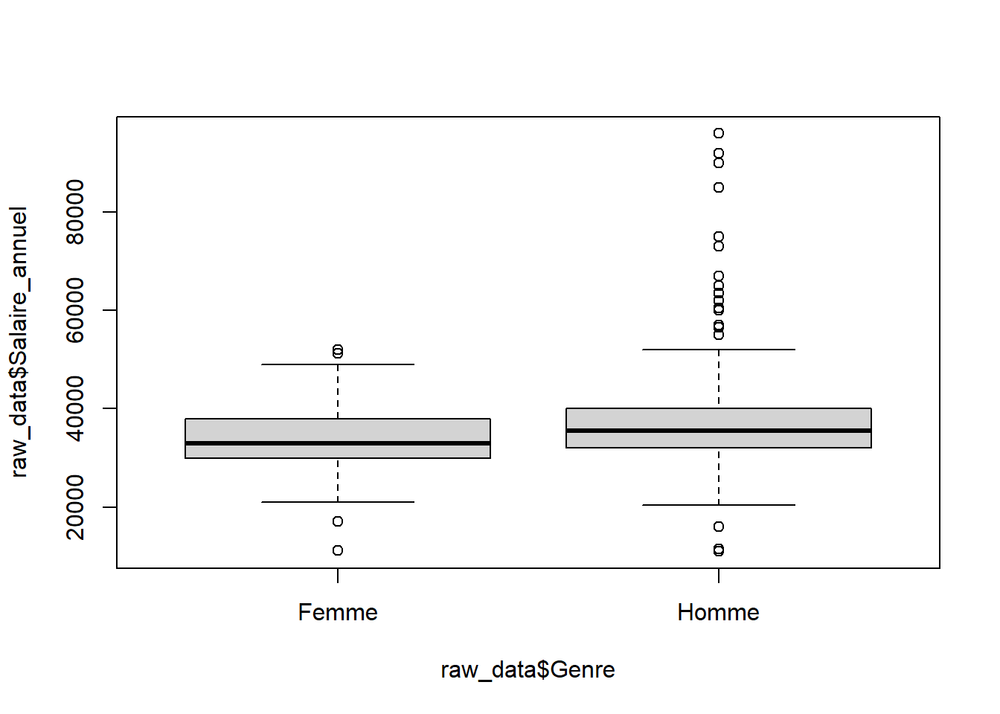
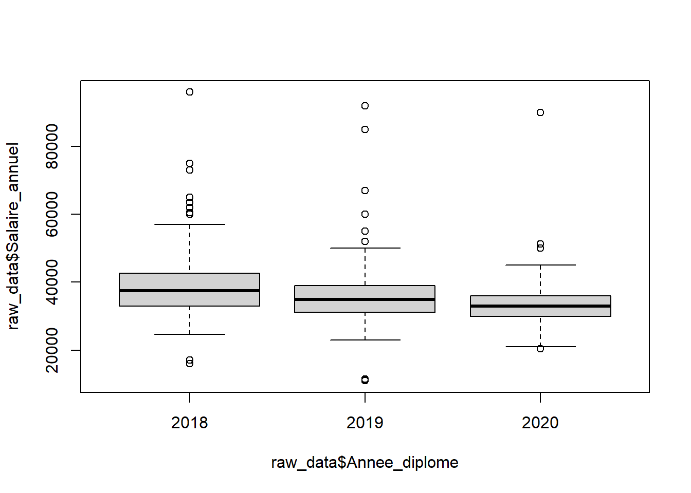
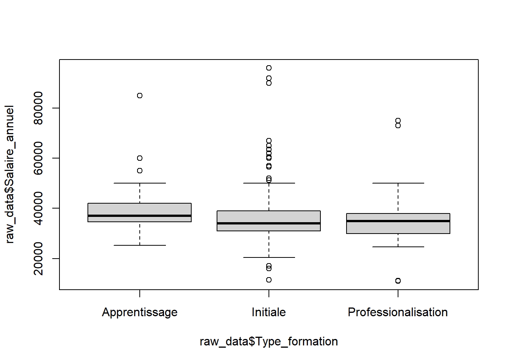
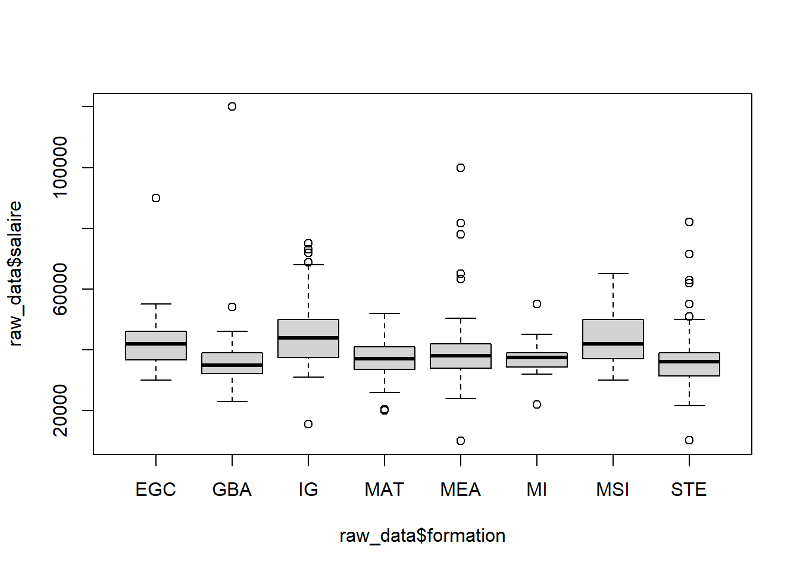
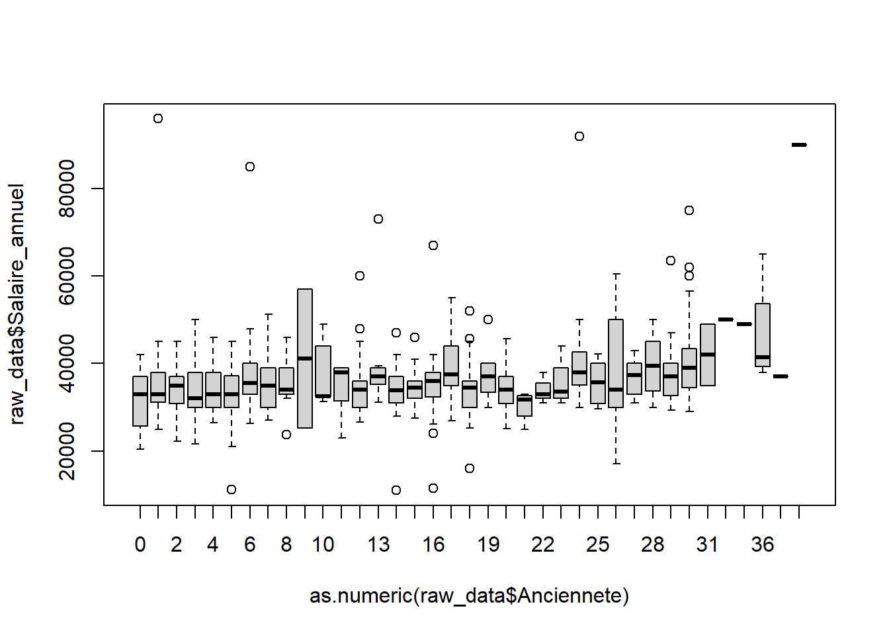
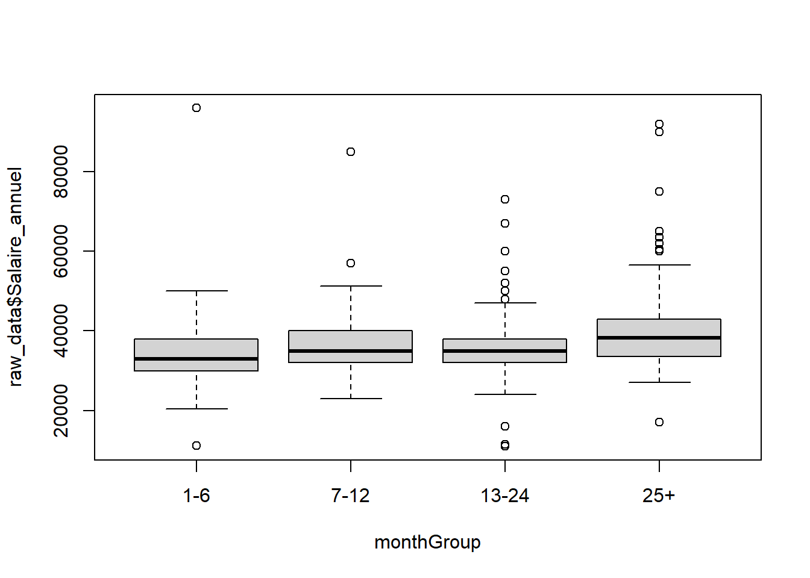
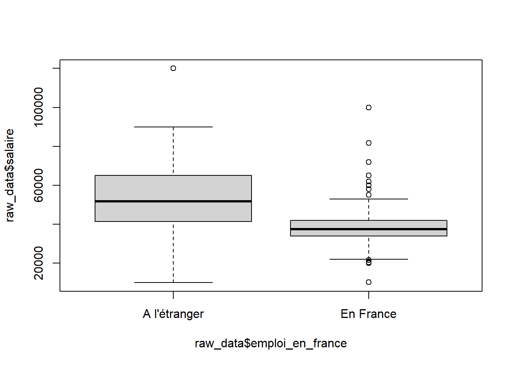
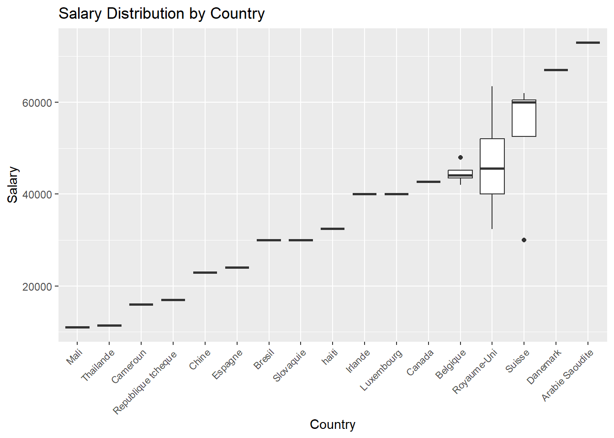
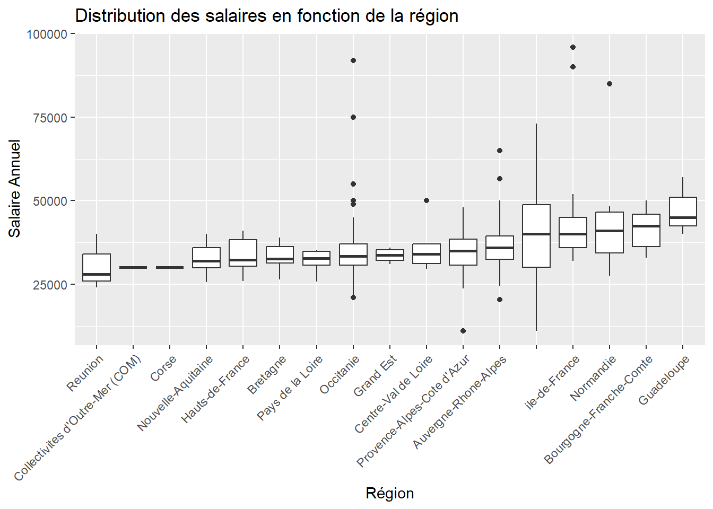
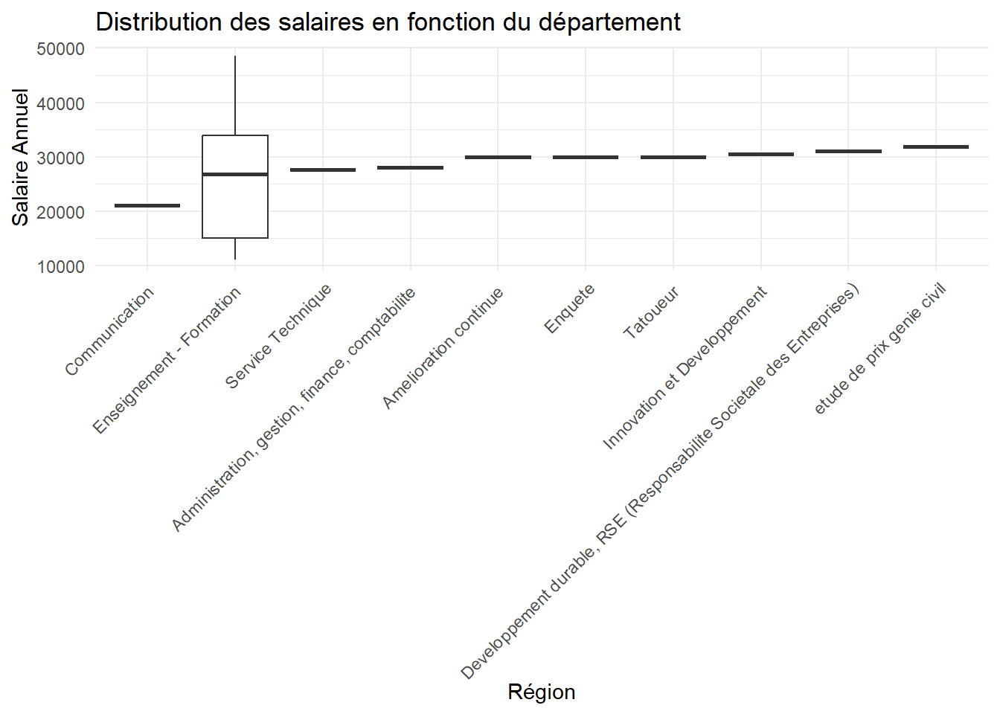

My Website
Commun
Librairies
if (!requireNamespace("ggplot2", quietly = TRUE)) {
install.packages("ggplot2")
}
library(ggplot2)Etude données 2018
Récupération des données
# Trying ISO-8859-1
raw_data <- read.csv("data/data_2021.csv", sep = ",")Définir toutes les données comme caractère (variable qualitative) sauf le salaire
# Lists specifying which columns to convert to factors and numeric
factor_cols <- c("Date", "Identifiant", "Genre", "Annee_diplome","Type_formation","Filiere","Situation","Secteur","Nature_contrat", "France","Region", "Pays", "Taille_entreprise", "Nom_entreprise", "Departement", "Intitule_poste")
numeric_cols <- c("Anciennete", "Salaire_annuel")
# Convert columns to factors
raw_data[factor_cols] <- lapply(raw_data[factor_cols], as.factor)
# Convert columns to numeric
raw_data[numeric_cols] <- lapply(raw_data[numeric_cols], as.numeric)summary(raw_data)Avec ces valeurs on peut déduire beaucoup de choses…
Fonction de filtre
Ceci est une fonction utilisé après pour retirer différentes lignes en fonction des valeurs dans une certain colonne. (équivalent d’un select where)
remove_rows_by_value <- function(data, column_name, value_to_remove) {
data_filtered <- subset(data, !(data[[column_name]] == value_to_remove))
return(data_filtered)
}Première étude
Disparité homme/femme - toute formation confondue
boxplot(raw_data$Salaire_annuel ~ raw_data$Genre)
En 2018, on ne remarque pas de différence significative entre les hommes et les femmes.
Disparité sur les dates d’optention du diplôme
boxplot(raw_data$Salaire_annuel ~ raw_data$Annee_diplome)
Plus l’année d’optention du diplôme est ancienne, il semblerait que plus le salaire est élevé, ce qui s’explique par l’ancienneté et l’expérience.
Disparité formation initiale/apprentissage/contrat de professionalisation
boxplot(raw_data$Salaire_annuel ~ raw_data$Type_formation)
Les apprentis et les élèves en formation initiale semblent avoir des salaire similaires. Tandis que ceux en contrat de professionnalisation ont des salaires en moyenne similaire avec une plus grande disparité haute.
Disparité des filières
boxplot(raw_data$Salaire_annuel ~ raw_data$Filiere)
Filtrage des personnes en activité
filtered_data <- remove_rows_by_value(raw_data, "Situation", "En recherche emploi")
filtered_data <- remove_rows_by_value(filtered_data, "Situation", "En poursuite d'études (hors thèse) / en formation")
filtered_data <- remove_rows_by_value(filtered_data, "Situation", "These")
filtered_data <- remove_rows_by_value(filtered_data, "Situation", "Sans activité")
filtered_data <- remove_rows_by_value(filtered_data, "Situation", "Volontariat")
filtered_data <- remove_rows_by_value(filtered_data, "Situation", "En création d'entreprise /reprise d'entreprise")
filtered_data <- remove_rows_by_value(filtered_data, "Situation", "Etudes")
activite_data <- filtered_dataDisparité par nature du contrat
# Filtrage de certains contrat peu représentatif
filtered_data <- remove_rows_by_value(activite_data, "Nature_contrat", "Service à la personne (cours particulier de mathématiques via Acadomia)")
filtered_data <- remove_rows_by_value(filtered_data, "Nature_contrat", "")
ggplot(filtered_data, aes(x = Nature_contrat, y = Salaire_annuel)) +
geom_boxplot() +
theme(axis.text.x = element_text(angle = 45, hjust = 1, size = 8)) +
labs(title = "Salary Distribution by Contract Type", x = "Contract Type", y = "Salary")
On peut remarquer que les CDI ont un net avantage de salaire comparé aux autres types de contrats, les CTT sont cependant légèrement au dessus des CDI.
Distribution du salaire en fonction de l’ancienneté
ordered_data <- raw_data[order(as.numeric(raw_data$Anciennete)), ]
boxplot(raw_data$Salaire_annuel ~ as.numeric(raw_data$Anciennete), data = ordered_data)
Il ne semble à priori pas avoir de lien entre l’ancienneté et le salaire sur les deux premières années, après cela, il manque des informations.
Distribution du salaire en fonction de l’ancienneté (Groupée)
monthGroup <- cut(as.numeric(raw_data$Anciennete),
breaks = c(0, 6, 12, 24, Inf),
labels = c("1-6", "7-12", "13-24", "25+"),
right = FALSE)
boxplot(raw_data$Salaire_annuel ~ monthGroup, data = raw_data)
En regroupant l’ancienneté sur des périodes de 6 mois, on remarque une légère augmentation à partir de 7 mois, mais ce n’est pas significatif pour autant.
Distribution du salaire en fonction de France/étranger
boxplot(raw_data$Salaire_annuel ~ raw_data$France)
Ici entre la france et l’étranger les données sont proches.
Distribution du salaire en fonction du pays à l’étranger
raw_data_filtered <- raw_data[complete.cases(raw_data$Pays) & raw_data$Pays != "" & !grepl("^\\s*$", raw_data$Pays) & !is.na(raw_data$Salaire_annuel), ]
median_salaries <- tapply(raw_data_filtered$Salaire_annuel, raw_data_filtered$Pays, median)
median_order <- names(sort(median_salaries))
emploiFactor <- factor(raw_data_filtered$Pays, levels = median_order)
ggplot(raw_data_filtered, aes(x = emploiFactor, y = Salaire_annuel)) +
geom_boxplot(na.rm = TRUE) +
theme(axis.text.x = element_text(angle = 45, hjust = 1, size = 8)) +
labs(title = "Salary Distribution by Country", x = "Country", y = "Salary")
Ici les données sont trop faible pour de réelles interprétations, sauf pour l’Irlande où les salaires ont l’air d’être bien plus haut que les salaires français. (ref diagramme précédent)
Distribution des salaires en fonction de la région
# Remove rows with non-finite values in Salaire_annuel
raw_data <- raw_data[!is.na(raw_data$Salaire_annuel) & is.finite(raw_data$Salaire_annuel), ]
# Remove rows with non-finite values in other numeric columns if needed
# raw_data <- raw_data[complete.cases(raw_data[, numeric_cols]), ]
ordered_regions <- names(sort(tapply(raw_data$Salaire_annuel, raw_data$Region, median)))
# Plotting the distribution of salaries based on region
ggplot(raw_data, aes(x = Region, y = Salaire_annuel)) +
geom_boxplot() +
theme(axis.text.x = element_text(angle = 45, hjust = 1)) +
scale_x_discrete(limits = ordered_regions)+
labs(title = "Distribution des salaires en fonction de la région",
x = "Région",
y = "Salaire Annuel")
Le minimum étant pour la Corse avec 30 000€/an tandis-que l’ile-de-France est plus proche des 40 000€ à 45 000€, il y a un lien mais aucune région ne semble se distringuer particulièrement.
Distribution des salaires en fonction du secteur d’activité
# Order the regions based on the median salary
ordered_departments <- names(sort(tapply(raw_data$Salaire_annuel, raw_data$Departement, median)))
# Select the top 10 departments
top_10_departments <- head(ordered_departments, 10)
# Plotting the distribution of salaries based on region with ordered x-axis
ggplot(raw_data, aes(x = reorder(Departement, Salaire_annuel, FUN = median), y = Salaire_annuel)) +
geom_boxplot() +
labs(title = "Distribution des salaires en fonction du département",
x = "Région",
y = "Salaire Annuel") +
theme_minimal() +
theme(axis.text.x = element_text(angle = 45, hjust = 1)) +
scale_x_discrete(limits = top_10_departments)## Warning: Removed 492 rows containing missing values (`stat_boxplot()`).
Aucun département ne semble avoir suffisament de données pour être significatif.